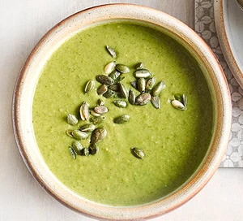

Herby broccoli & pea soup

Description
Our vibrant broccoli and pea soup delivers three of your 5-a-day, and is full of nutrients including iron, folate and vitamin C
Ingredients
- 1 tbsp rapeseed oil
- 1 onion , finely chopped
- 1 large garlic clove , crushed
- 400g broccoli , chopped into small florets
- 300g frozen peas
- 200g chard , chopped
- 1l low-salt veg stock
- ½ small bunch of basil , chopped
- small bunch of dill , chopped
- 1 lemon , zested and juiced
- 2 tbsp pumpkin seeds , toasted
Steps
- Heat the oil in a large saucepan. Add the onion and fry for 8 mins until soft and translucent. Add the garlic and cook for 1 min more. Tip in the broccoli, peas and chard, then pour over the stock and bring the mixture to the boil. Reduce the heat to a simmer, cover and cook for 25 mi
- Stir through the herbs, lemon zest and juice, then blitz the soup with a stick blender until completely smooth. Ladle into bowls and serve with the toasted pumpkin seeds scattered over the top.